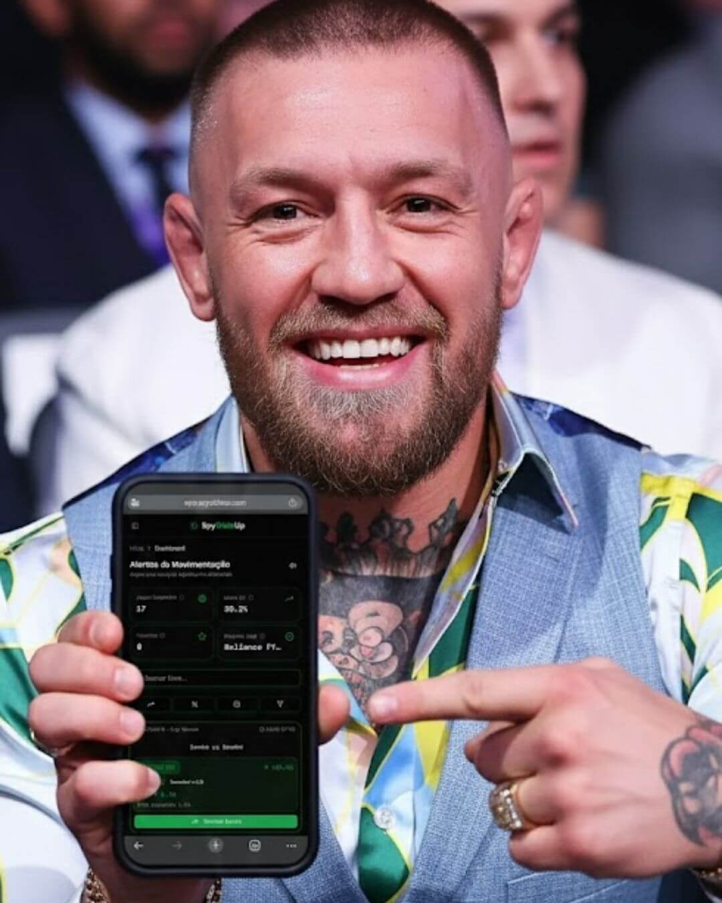

While you're betting $50 on luck, sharks are moving $50,000 on the same game...
Let me explain something nobody tells you...
There you are, on your phone, 10 minutes before the game, putting $50 on the team you think is going to win... Cool... Normal... Everybody does it...
But while you're placing your bet, there's a guy in an office in Malta — a tiny country in the Mediterranean that's a paradise for betting syndicates — who put $50,000 on the same game and the same team...
Except he did it 6 hours ago...
And you know what the difference is?... By the time the referee blows the opening whistle, the price he locked in hours ago is already worth 40% more than the price you just got...
He doesn't know more about soccer than you... He doesn't have a player's phone number... He doesn't have leaked inside info...
He just saw one thing you didn't: where the mountain of money was heading before the market woke up...
That's exactly the blind spot SpyOddsUp was built to cover... A tracker that works 24/7 monitoring the global money flow and delivering the opportunity straight to you — before the game...
Picture this...
Yesterday, in the middle of your workday, SpyOddsUp buzzes in your pocket: "Price Opportunity: Premier League... Institutional volume detected..."
Two taps on the screen, you lock in the high price... Thirty seconds and you put your phone away... Today, when the game airs on TV, the price you paid has already appreciated 32%... The bookmaker already corrected the line, but you grabbed the discount... You're already ahead...
While your friends are scrolling Telegram looking for the "pick of the day" or relying on luck, you made a decision based on institutional data...
We already have 2,847 members using SpyOddsUp... And the combined edges this group has captured in the last 90 days surpass the $200,000 mark in retained value... That's money that would have stayed in Bet365's pocket — but went straight into the pockets of those who had the information first...

Access limited by server technical capacity...
💸 You Want to Make Money Betting... Period...
Let's cut the crap...
You're not here to become a mathematician... You don't want to learn formulas... You don't want to take a boring 6-week course on "bankroll management"...
You want one simple thing: open the betting app, see a green balance, and screenshot it for the group chat...
So let me show you how this actually works in practice...
When you bet on something, you're basically buying a "price"... Like this: if the price of a bet is at 2.00, it means if you put in $100 and win, you get $200 back... Simple...
Now, imagine you bought that price at 2.00 and, before the game starts, it dropped to 1.50... That means you paid cheap... You bought at a discount... Anyone getting in now has to pay way more for the exact same thing...
Whoever buys cheap consistently, profits in the long run... That's the entire logic of the game...
SpyOddsUp alerts you when the price is at the perfect point, before the game... You get in, put your phone down, and let the math work for you...
Last week, for example, you could've acted on 3 alerts...
✅ Two hit (green)...
❌ One missed (red)...
Result for the week: +$1,200 net...
It's not a salary, but it's enough to cover the gym membership, fill up the gas tank, and go out to dinner on Saturday without even looking at the price on the menu... All because you positioned yourself hours before everyone else...
And in the long run?... This is just the tip of the iceberg... We're talking about over 200 entries in 6 months, with an average profit of $100 per entry... Do the math on what that means in your bank account at the end of the day...
Now, set the bar as low as possible: even if only 60% of those plays hit — and being brutally honest, 60% for us is a "doomsday" scenario —, the accumulated profit would've already paid for your annual subscription with room to spare... Whatever's left over is pure profit straight into your pocket...
The reality, however, is far more aggressive... While the market stumbles and loses money, SpyOddsUp's numbers deliver what seems impossible to the average person: we easily reach 92% accuracy... You're not just getting in the game; you're getting in to win with the statistics on your side...
SpyOddsUp wasn't built for people who want to study theory... It was built for people who want results in their account...
🎬 What They Don't Show You on Instagram...
You've seen those stories...
Drake in a VIP box at a game, celebrating millions won on a bet... McGregor on a yacht flexing a screenshot... Bilzerian and Tate living an absurd lifestyle and talking about freedom...
The rule is simple: they post the party, but they never post the office...
When you see Drake celebrating a $500,000 bet on his story, what he doesn't show is the real play that happened the day before: someone in a quiet office looked at a screen, tracked money moving in a weird pattern, and called it: "Get in now, before tomorrow's game..."
That yacht or VIP box is just the consequence... The real money was made the afternoon before, in 20 minutes of decision-making... It was the time it took to open a piece of software, receive the movement alerts, and position with an absurd edge before anyone else...
At their level, there's no "gut feeling" or "thinking they'll win"... There's knowing exactly where the smart money is going...
And now, you can have access to those exact same 20 minutes...
The tool that delivers this intelligence pre-chewed to your phone is called: SpyOddsUp...

⚠️ The Game You Don't See...
I'm going to tell you the raw, unfiltered truth: there's a machine running 24 hours a day against you...
Bookmakers (Bet365, Betano, Sportingbet) make money when you bet on impulse, with no information, at the wrong time...
The big syndicates make money when you panic and cash out a bet at the worst possible moment...
Telegram gurus make money selling picks to you — picks they don't even have the guts to follow themselves...
Everybody wins... Except you...
And nobody tells you this because the entire market profits from your lack of information...
Now, think about this familiar scenario...
You open the app to check out tomorrow's games... You see a strong team paying 2.05 and think: "I'll get in tomorrow..." You go to sleep... The next day, you open the app and the price has collapsed to 1.55... It dropped overnight... And you don't even understand how...
"How did the price drop that much?..."
"Whoever got in yesterday afternoon knew something?..."
"I looked at the SAME game and missed the timing?..."
That's what stings... You saw the opportunity... You thought about getting in... But you waited... And while you were sleeping, the market moved... The guy who got in the afternoon before paid cheap... You woke up and all that was left were scraps... Same game... Same team... A completely crushed price...
It's not magic... It's not a coincidence... There's no "secret information"...
The name for this is money movement...
It works like a scale: the market moves billions of dollars a day... When someone puts millions of dollars all at once in one direction, the weight tilts the price...
And in this ocean of money, there are the "big fish"...
Professional syndicates: Organized groups with teams, cutting-edge software, and heavy capital... They don't "bet" and cheer... They manipulate prices...
High-rollers: People with enough money to move the entire market when they decide to get in...
Institutional volume: Heavy money that looks random but follows a rigorous mathematical pattern...
These people don't spend a single second trying to "guess" who's going to win the game...
They operate the price, hours and days before the referee blows the whistle...
Whoever positions first, buys cheap... Whoever waits for the game to start, pays the bill...
SpyOddsUp was created precisely to flip this game... For the first time, the most valuable information in the market is going to play on your side...
🕵️ How the Big Players Manipulate Betting Prices...
Now I'm going to explain exactly how the guys who move millions actually make money with betting... No complicated jargon... No math-speak... Like I'm drawing it on a bar napkin for you...
In the next 3 minutes, you're going to understand a strategy that 99% of bettors will never discover... Not because it's secret... But because nobody has the guts to explain it this way...
There are super-organized groups called syndicates that operate worldwide... The most famous and ruthless one is called Starlizard...
These guys don't bet like you and me... They don't pick a team, put on the jersey, and sit on the couch to cheer...
They manipulate the price of bets to guarantee profit...
And the strategy behind this manipulation is frighteningly simple... Here's how the trap works...
They pick the favorite with the low price...
They look for games where the favorite — the team everyone is absolutely certain will win — has a crushed price, somewhere between 1.30 and 1.50...
A price that low means the market already considers that team nearly unbeatable... In practice: if you bet $100, you only make about $30 to $50 profit on the return... Very little risk, but mediocre profit...
This is just the stage being set... The magic (and the cruelty) comes next...
They make the price rise on purpose... (The "Head Fake" trap)...
This is where it gets genius... And absolutely cruel...
They start injecting money on the opposite side in a surgically calculated way to force the favorite's price to climb... The odds go from 1.35 straight up to the 2.00 range...
When the price inflates out of nowhere, the entire market panics... The average bettor freezes and thinks: "Wait, if the price jumped that much, something's wrong... Did the star player get hurt?... Is there a fix?... Is there going to be an upset?..."
The guy starts digging on Twitter, Googling it, desperately messaging the VIP group asking if anyone knows something... Nobody knows a thing... But everybody gets scared and runs from the bet...
And that's exactly what the syndicate wanted: scare the herd to create the artificial price they want to buy...
The entire system is working against you at that moment... The bookmaker adjusts the line... The Telegram guru sends a voice note saying: "Guys, be careful with this game, abort mission..." Panic spreads... And whoever created the panic is sitting there... in the air conditioning, finger on the trigger, just waiting...
⚠️ It's an optical illusion... The syndicate has zero secret information about the game... They just have enough money to push the market wherever they want...
You know what the big bettors — the same guys celebrating in VIP boxes on Instagram — do at that moment?... They don't fall for the trap... They surf it... Because their system tells them the movement is fake, and they position themselves right in the eye of the hurricane, before everyone else...
They go all-in on the inflated price...
Now the price hit 2.00... It's way higher than the reality of the game allows... And it's right in the middle of this artificial chaos that the syndicate strikes... They go all in... Millions of dollars at once... All of this on a quiet afternoon, hours before the game starts...
Think of it this way: imagine you really want a designer shirt that costs $500... So you spread a rumor that the brand is going bankrupt, the store panics and liquidates their stock for $200... You walk in and buy it at the price you dictated...
That's exactly what they do with bets... They created the artificial discount, bought the odds at the ceiling, and now they're laughing while you're sending voice notes on WhatsApp complaining that "the market is acting weird today..."
You know that guy you follow on Instagram?... The one who posts travel photos every month and seems to never "work"?...
He's not lucky... He operates right here...
The afternoon before the game... At the inflated price... At the absurd discount the market served up on a silver platter because the entire herd got scared and ran...
He doesn't have fear... He has data...
They let the price return to normal...
After sucking all the value out of the market and filling their cart with bets at 2.00, the syndicate takes their foot off the gas... The opposite pressure stops...
And what happens?... Market gravity kicks in... Over the next few hours, the price melts, melts, melts, until it returns to normal: back down to the 1.30–1.50 range...
The scare is over... The market adjusted to the reality of the game...
But by the time the referee finally blows the opening whistle, the trap has already closed... The price the bookmaker is offering now is far, far lower than what the syndicate grabbed the afternoon before...
The profit is in the price, not the result...
This is the part that changes the rules of the game forever...
They got in at the inflated price of 2.00 the afternoon before... By the time the game starts, the market adjusted and the price closed at 1.40...
The math is simple: they bought something that, mathematically, is already worth 42% more... Before the whistle... Before the first touch on the ball... Before any goal...
It's exactly like buying a stock for $10 today and it opening at $14.20 the next day... You're already ahead before the company even opens its doors...
And here's the most important truth you'll read today...
The game can go right or wrong on the field... It doesn't matter... That doesn't change the fact that they bought at the perfect price... If they repeat this exact move 100 times, always getting in at a price that's absurdly better than the market's, the math guarantees profit in the long run...
You don't need to win every bet... You just need the consistent edge...
That's how you build real extra income... Not with a guru's pick... Not with a fan's "gut feeling"... With a price edge captured in a cold, calculated way, hours before the game...
📉 How the Price Moves (Real Example)...
| Timing | Price | What's Happening |
|---|---|---|
| ⏱ 1 day before | 1.38 | Favorite team, normal price... |
| ⏱ 12h before | 1.65 | Price starts climbing... artificial pressure |
| ⏱ 6h before | 2.00 | Price inflated — TRAP SET |
| ⏱ 5h before | 2.00 | ✅ SYNDICATE ENTERS HERE (buys cheap)... |
| ⏱ 2h before | 1.55 | Price starts returning to normal... |
| ⏱ Game time | 1.40 | Price closes at real value... |
→ They got in at 2.00, a day before...
→ At game time, the price is at 1.40...
→ +42% edge... Before the ball even rolls...
Get the size of the play?...
The big "secret" of these guys isn't having the ref's number, a player's contact, or any leaked info... The brutal difference between them and the average bettor comes down to four rules...
→ They track exactly where the heavy money is going...
→ They get in at the exact right time, capturing the perfect price...
→ They repeat this in a cold, mathematically consistent way...
→ They operate hours before the game starts — never in the desperation of live betting...
Now, the million-dollar question is...
What if you could see that exact movement happening on your phone screen, hours before any game starts?...
🧠 The 3 Strategies the Big Players Use...
Every big bettor — from global syndicates to the guys flexing on Instagram — uses the exact same 3 strategies... And the most important detail: they all happen hours before the game...
SpyOddsUp works like a radar and detects all 3 automatically for you...
🎭 1. PRICE TRAP (Head Fake)...
This is exactly the scheme I just broke down for you... They inflate the price on purpose to make the herd panic... While amateurs run away scared, the professionals buy at a discount...
In practice, it works like this... The crew in the Telegram group sends: "The price spiked out of nowhere, something's off, don't get in!..." Total panic...
And you?... You open SpyOddsUp, see the "TRAP DETECTED" alert on your screen, and do the exact opposite... You get in at the high price the afternoon before... The next day, when the referee blows the whistle, the price has already returned to normal... You locked in the profit at the discount... The rest of the world paid more...
💰 2. HIDDEN MONEY (Stealth Volume)...
The sharks don't drop millions of dollars all at once into a single bookmaker... That would crash the system and spook the market instantly... What do they do?... They dilute it... They place small amounts spread across multiple different bookmakers so nobody notices...
From the outside, the price looks like it's moving "slowly"... but when you add it all up, you realize it's an invisible avalanche of money pushing the market in one single direction...
SpyOddsUp monitors ALL bookmakers simultaneously and totals up this hidden volume, identifying the anomaly with plenty of time for you to position before the wave breaks...
💥 3. PRICE BREAK (Line Rupture)...
There comes a point when the pressure from institutional money becomes unsustainable and the price finally "breaks"... It crashes sharply and violently... Drops from 2.00 to 1.60 in a matter of minutes...
This is the exact moment when most people realize something happened and try to get in... But whoever waited for the price to drop already missed the timing... The opportunity evaporated...
SpyOddsUp cross-references market pressure data and detects this break before it happens, giving you that golden window to get in while the price is still high...

🔍 OK, But What Does SpyOddsUp Actually Do?...
SpyOddsUp works like a silent watchdog... It monitors the betting market 24 hours a day and alerts you the exact second something unusual happens — long before the game starts...
The contrast is brutal...
While you're looking at one game at a time, it's scanning thousands of games simultaneously...
While you're trying to "feel out" who's going to win based on gut instinct, it's mathematically calculating where millions of dollars are headed...
And when it detects an abnormal movement... your phone buzzes...
🚨 "SpyOddsUp Alert: Abnormal movement in the Premier League... Price at 2.05... Estimated edge: +31%... Game tomorrow at 4:45 PM..."
You open your bookmaker's app, place the bet in 30 seconds, put your phone away, and go back to your routine...
The next day, when the referee finally blows the opening whistle, the price has already dropped to 1.55... You've already locked in the profit from your positioning... Whoever got in after you paid more... Whoever didn't get in at all never even knew the window of opportunity existed...
And the best part: it's not one little alert per month... Every single day there's a game... Every game with money circulating has movement... And every institutional movement is a profit opportunity...
While you sleep, SpyOddsUp is tracking the Premier League, La Liga, Serie A, Bundesliga, Champions League... hundreds of simultaneous games... You don't need to waste time hunting for opportunities in the dark anymore... The opportunity hunts you...
Today, while you...
- Sit watching a sports panel on TV, listening to a commentator who's never put $1 of his own money on the line tell you who's going to win...
- Open Telegram to read a pick from the
"King of Greens"with a rented Lamborghini as his profile picture... - Follow an
"expert"on Twitter who hits 3 bets, misses 7, deletes the losses, and only posts the wins...
The guys who actually make money are looking at the opposite side... Hours before the ball rolls, they have on their phone screen...
- WHERE the heavy money is flowing...
- WHICH side of the market is under institutional pressure...
- WHEN the price line is about to break...
- WHO is behind the movement (sharks or
minnows)...
What SpyOddsUp Detects for You...
- PRICE TRAP: Shows when the big players are inflating the price on purpose... You don't fall for the panic — you buy at the discount...
- HEAVY MONEY: Separates the average bettor's
$50from the sharks' $500,000... You see where the real money is going... - PRICE BREAK: Alerts you shortly before the price tanks, giving you time to get in while the odds are still high...
- UNUSUAL MOVEMENTS: Anything outside the normal mathematical pattern becomes an alert on your phone...
- ALL BOOKMAKERS: Bet365, Betano, Sportingbet... The system monitors all of them at the same time...
- ALWAYS PRE-GAME: Everything happens pre-match... You receive the info, get in calmly, and go live your life...
We're not talking about a website with delayed data... This is real-time market reading... The same speed... The same data the syndicates use...
The only difference between you and the guys who do this for a living is that they've been using this technology for years... And you're going to start today...
SpyOddsUp wasn't created by Telegram "gurus"... It was developed by former data and risk analysts who know the bookmakers' weaknesses from the inside... They know where the money hides, and the software tracks exactly that...
💰 Extra Income: It's Not a Promise... It's Simple Math...
SpyOddsUp delivers the only thing that actually puts money in your pocket in this market: mathematical price edge... Before everyone else...
And when you have a price edge consistently, money in the account is a pure consequence...
Here's how the math works out in a real scenario...
Tuesday, 3 PM... Your phone buzzes with an alert... The game isn't until tomorrow at 4:45 PM... You open the app and place $100 at a price of 2.10 in exactly 30 seconds, without even stopping what you were doing... The next day, when the referee blows the whistle, the market has adjusted and the price has already dropped to 1.65... The game plays out... It hit... $110 clean profit...
Know how much your monthly SpyOddsUp subscription costs?... $47...
You paid for the entire month with a single entry you placed the afternoon before, sitting in traffic... And you still have 25 days of alerts left in the month...
Two entries that hit?... You're already in profit... Three entries?... That's consistent extra income... A full month positioning in advance?... You'll never want to bet at game time again, chasing crushed odds...
It's not about "get rich quick"...
It's about stopping the bleeding to a system that profits from your lack of information... It's about starting to see what's happening in the market, hours before everyone else...
Money in your pocket changes how you walk... Changes how you talk... Changes how others look at you when you walk into a room... It's not about flexing... It's about the confidence of someone who knows the month is already covered — and that shows from a mile away...
You know that Instagram profile that posts "another green" every day with a nice screenshot?... He's not analyzing game by game... He got the alert the night before, got in in 30 seconds, and the next day took the screenshot... The only difference between him and you is that he already subscribed and you're reading this page...
60 days from now, it'll be you sending the screenshot... It'll be your friend replying with the clapping emoji and dying inside... It'll be someone DMing you asking "bro, how are you doing this?..." The tables turn... And they turn fast...
🔥 The Question You Should Be Asking Yourself...
Do you really think Drake makes money just from music?... That McGregor sustains that lifestyle just from fighting?... That Bilzerian built all of that just from an inheritance?...
Think about it...
If they have access to information that most people don't... If they position before the games... If they use tools that almost nobody knows about...
Why wouldn't you have access too?...
🛡️ What SpyOddsUp is NOT...
Before I show you the access plans, I need to be brutally honest about what SpyOddsUp is not... If you're looking for any of the things below, please close this page now...
- It's
nota VIP pick group... There's no "guru" sending voice notes...Noneof the classic "good game for today, trust the call..." Nobody is going to treat you like a beginner saying"bet here"... - It's
nota miracle auto-betting bot... The system doesn't ask for your betting account password... It doesn't press any buttons on its own... Your money, your rules... You have 100% control, always...
What it actually DOES...
- TRACKS THE MONEY: Shows you exactly where the institutional millions are going, in real time, long before the ball rolls...
- DETECTS THE OPPORTUNITY: Alerts you the exact second the price is abnormal (traps, hidden volume, line breaks)...
- GIVES YOU THE POWER: Allows you to make decisions based on cold, mathematical data —
not Telegram "guesswork"...
The final decision is always yours...
SpyOddsUp is the high-tech radar scanning the minefield... You're the pilot...
If operating at this level of professionalism makes sense to you, keep reading...
The Plan...
- Alerts before games, in real time...
- Sound notification + email...
- Dashboard to track your bets...
- Filters to choose what interests you...
- Charts showing your history...
- Price edge meter (CLV)...
- Export your data as spreadsheet or PDF...
Once you start here, you'll never go back to betting in the dark...
⏳ Why Access May Close...
SpyOddsUp is not (and never will be) open to everyone... And the reason is purely mathematical and protective...
The Speed Barrier: Our system processes millions of data points per second... If thousands of people join, the server slows down and the alert arrives late... In this market, a 5-second delay makes you miss the best price...
Strategy Protection: If too many people receive the alert and enter the same game at the same time, the bookmaker notices the absurd volume and tanks the odds immediately... The opportunity dies for everyone...
To protect the speed and profit of those who already trust our tool, the cap is strict: only 500 active spots...
When that limit is hit, access closes...
No prior notice... No fake countdown timer... No "waitlist"...
Whoever got in secured their key and switched sides... Whoever stayed out... keeps betting blind...
⚠️ Right now, at this very minute, there are still spots available... In 2 hours?... In 10 minutes?... Can't guarantee it...
👉 You Have Two Options...
Close this page... Go back to begging for picks on Telegram... and bet late... Lose again and have to lie to your family when they ask about your money... The same old routine...
Get in now... Start receiving alerts hours in advance and position at the perfect price... Switch sides and start building real profit with the math on your side...
Think about this...
30 days from now, when they roast you at the barbecue asking "so, how are the bets going?...", you won't look away... You'll pull out your phone and show the green balance... The guy who was roasting you is going to gulp and ask you for the link...
The decision is simple, but time is running out...
While you "think about whether it's worth it," whoever decided fast already received the first alert and is just waiting for kickoff to screenshot the profit...
Overthinking is the favorite sport of losers...
Before it closes... Again...